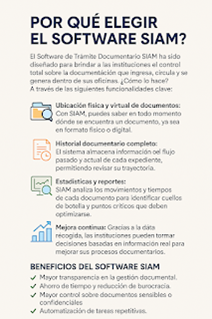

Optimiza tu Gestión con el Software de Trámite Documentario SIAM
En la era digital, donde la eficiencia y la organización son claves para
el éxito institucional, la gestión documental se convierte en un pilar
fundamental. Las instituciones públicas y privadas reciben y generan
gran cantidad de documentos diariamente, y sin un sistema adecuado, esto
puede convertirse en un verdadero caos. Es aquí donde entra en juego el
Software de Trámite Documentario SIAM.
¿Qué es el Trámite Documentario?
El trámite documentario es el proceso mediante el cual una institución
gestiona la recepción, envío, seguimiento, archivo y control de los
documentos que se manejan internamente o con otras entidades. Este
proceso no solo implica la gestión física del papel, sino también el
seguimiento virtual y digital de cada expediente.
Una gestión documentaria eficaz permite:
Conocer en tiempo real la ubicación de un documento.
Evitar la pérdida o extravío de expedientes.
Acelerar procesos internos.
Mejorar la transparencia y trazabilidad.
¿Por qué elegir el Software SIAM?
El Software de Trámite Documentario SIAM ha sido diseñado para brindar a
las instituciones el control total sobre la documentación que ingresa,
circula y se genera dentro de sus oficinas. ¿Cómo lo hace? A través de
las siguientes funcionalidades clave:
Ubicación física y virtual de documentos:
Con SIAM, puedes saber en todo momento dónde se encuentra un
documento, ya sea en formato físico o digital.
Historial documentario completo:
El sistema almacena información del flujo pasado y actual de cada
expediente, permitiendo revisar su trayectoria.
Estadísticas y reportes:
SIAM analiza los movimientos y tiempos de cada documento para
identificar cuellos de botella y puntos críticos que deben
optimizarse.
Mejora continua:
Gracias a la data recogida, las instituciones pueden tomar decisiones
basadas en información real mejorar sus procesos documentarios.
Beneficios del Software SIAM
Mayor transparencia en la gestión documental.
Ahorro de tiempo y reducción de burocracia.
Mayor control sobre documentos sensibles o confidenciales.
Automatización de tareas repetitivas.
Mejora en la atención al ciudadano o usuario final.

Conclusión
Implementar un sistema como el Software de Trámite Documentario SIAM no
solo moderniza la gestión interna, sino que también impulsa la
eficiencia institucional. En un entorno donde el tiempo y la información
son recursos valiosos, contar con una herramienta que garantice orden,
trazabilidad y mejora continua es una inversión estratégica.